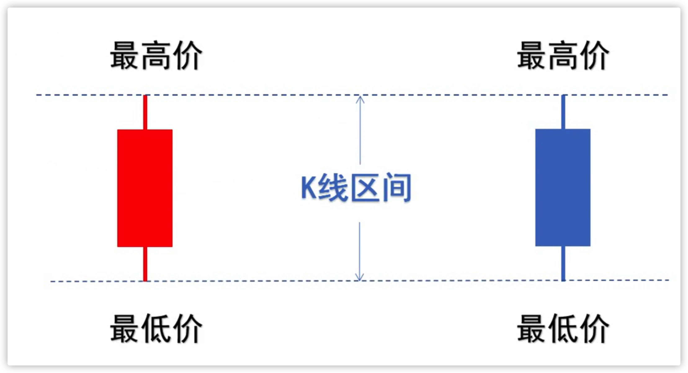
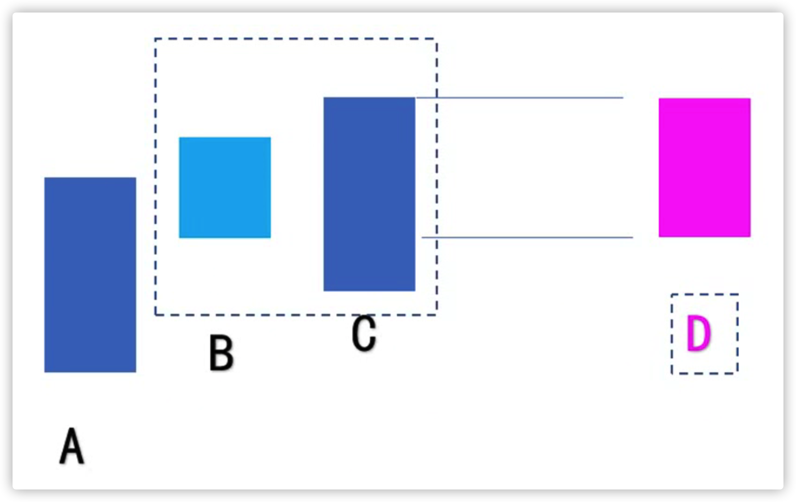
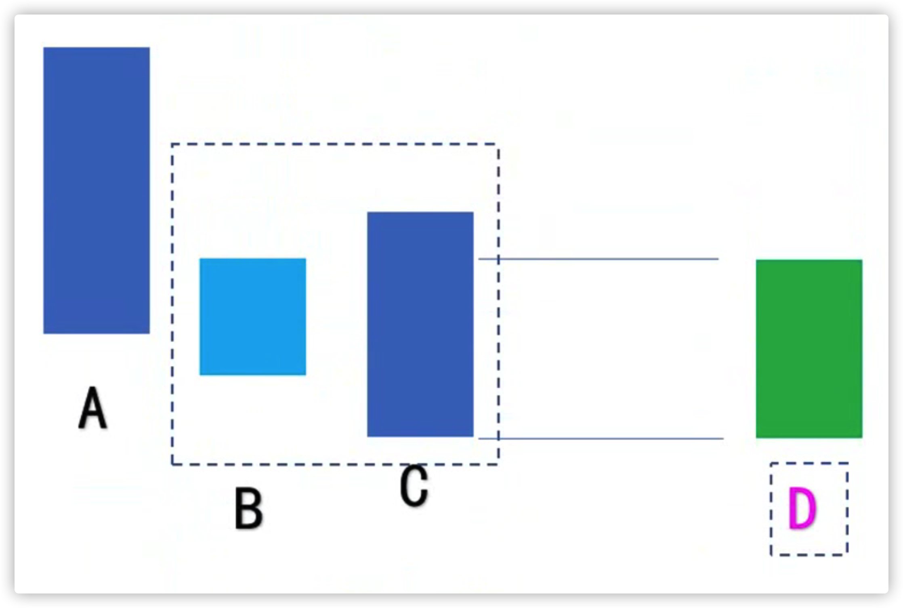

嘉可能缠论 - K线包含
原则
1、按照区间处理
一根K线完全处于另一根K线范围内。

- 包含关系
包含关系 = (前K高 >= 现K高 and 前K低 <= 现K低) or (前K高 <= 现K高 and 前K低 >= 现K低)
- PineScript:
// 是否包含关系
// 返回: true(包含)/false(不包含)
isIncludeKline(pH, pL, cH, cL) =>
// (前K_高 >= 现K_高 and 前K_低 <= 现K_低) or (前K_高 <= 现K_高 and 前K_低 >= 现K_低)
(pH >= cH and pL <= cL) or (pH <= cH and pL >= cL)
2、只处理存在包含关系的相邻K线
合并K线
- 趋势向上

新K线高 = 最大值(前K高, 现K_高)
新K线低 = 最大值(前K低, 现K_低)
- 趋势向下

新K线高 = 最小值(前K高, 现K_高)
新K线低 = 最小值(前K低, 现K_低)
- PineScript:
// 判断趋势向上/向下
// 返回: 'up'(向上)/'down'(向下)/''(横盘)
getTrend(pH, pL, cH, cL) =>
if cH > pH and cL > pH
'up'
else if cH < pH and cL < pH
'down'
else
''
// 合并K线
// 返回: [新K线_高, 新K线_低]
magreKline(pH, pL, cH, cL) =>
newkH = 0.0
newkL = 0.0
trend = getTrend(pH, pL, cH, cL)
// 趋势向上
if trend == 'up'
// 新K线_高 = 最大值(前K_高, 现K_高)
newkH := max(pH, cH)
// 新K线_低 = 最大值(前K_低, 现K_低)
newkL := max(pL, cL)
// 趋势向上
else if trend == 'down'
// 新K线_高 = 最小值(前K_高, 现K_高)
newkH := min(pH, cH)
// 新K线_低 = 最小值(前K_低, 现K_低)
newkL := min(pL, cL)
[newkH, newkL]